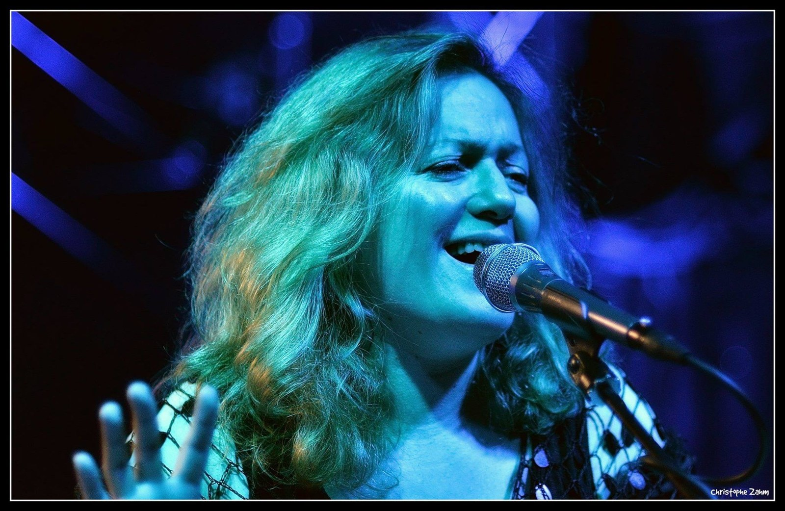

Français et anglais : deux langues, une même histoire
Des siècles de rencontres, d’influences et de surprises entre deux langues qui se connaissent mieux qu’on ne le croit.
Chanter. Prendre la parole. Jouer avec les mots. Faire passer quelque chose, vraiment.

La scène, les langues, la voix : trois fils qui se croisent depuis toujours.
Je chante, j’enseigne, je traduis et j’accompagne. Des activités différentes, mais une même attention aux mots, au rythme, à l’interprétation. Ce qui m’intéresse, c’est ce qu’on arrive à faire passer, avec sa voix et avec ce qu’on est.
Franco-britannique, je me suis formée au chant et au théâtre, notamment à Dublin, et j’ai poursuivi mon parcours entre la scène, la Sorbonne Nouvelle et le coaching professionnel. Aujourd’hui, je navigue entre concerts, ateliers, cours et conférences. Pas par goût de la dispersion : parce que tous ces univers se répondent.
J’aime chercher le détail qui change tout, travailler sérieusement sans se prendre trop au sérieux, et voir quelqu’un oser ce qu’il n’aurait pas tenté une heure plus tôt.
Envie de chanter, de défendre une idée, de faire travailler un groupe ou de partager la scène ? Choisissez votre point de départ.
Chant, interprétation, travail vocal et présence scénique. Trouver des appuis pour aller plus loin.
Pitch, entretien, négociation, présentation. Des mots qui sonnent juste et qui portent.
Des ateliers sur mesure, participatifs, pour apprendre en expérimentant.
Concerts, guitare, répertoire anglophone et projets en mouvement.
De la technique, de la pratique.
Et toujours de la personnalité.
Une voix chantée ou parlée, ce n’est pas une formule à appliquer. C’est quelque chose qui se travaille, s’écoute, s’incarne.
Coaching vocal individuel, interprétation, voix chantée et parlée, présence scénique. Du travail précis, sans perdre le plaisir.
Accompagnement pour étudiants, ingénieurs, managers et équipes : pitch, storytelling, entretiens, prise de parole, négociation.
Ici, on entre dans le vif du sujet : on essaie, on écoute, on ajuste. Des exercices vivants, des échanges francs et des retours précis pour avancer ensemble.
Je conçois des ateliers où chacun participe vraiment : prendre la parole, chanter, expérimenter, recommencer. Pour les écoles, les équipes, les associations et tous ceux qui ont envie d’explorer leur voix.
« Chanter en anglais » : un atelier autour de la prononciation, du rythme et de l'interprétation du répertoire anglophone.
Imaginer un atelier ensemble ↗Des extraits de coaching vocal et d’ateliers viendront ici, sur une chaîne YouTube VoiceWorld dédiée.
Vidéos en préparationChanter, jouer de la guitare, construire un son avec d’autres musiciens. Des répétitions aux concerts, j’aime cette énergie qui circule entre la scène et le public.

Quelques titres à découvrir en ligne, des concerts, et de nouveaux projets qui prennent forme. La suite s’écrit aussi sur scène.
Et si on jouait chez vous ? ↗À l’horizon 2027 : des compositions originales et un projet musical autour du répertoire de Radiohead.
Neuf photos à ouvrir si l’envie vous prend.
Langues, culture, communication, art de convaincre. Des conférences faites pour donner envie d'écouter, de questionner et de discuter.
Organiser une intervention ↗Des siècles de rencontres, d’influences et de surprises entre deux langues qui se connaissent mieux qu’on ne le croit.
De nouvelles conférences autour de la voix, du langage, de la communication et de l’art de convaincre.
Un cours de chant, un atelier, une conférence, un concert ? Ou une idée qui ne rentre dans aucune case ?
Racontez-moi ce que vous avez en tête. On verra ensemble ce qu’on peut en faire.